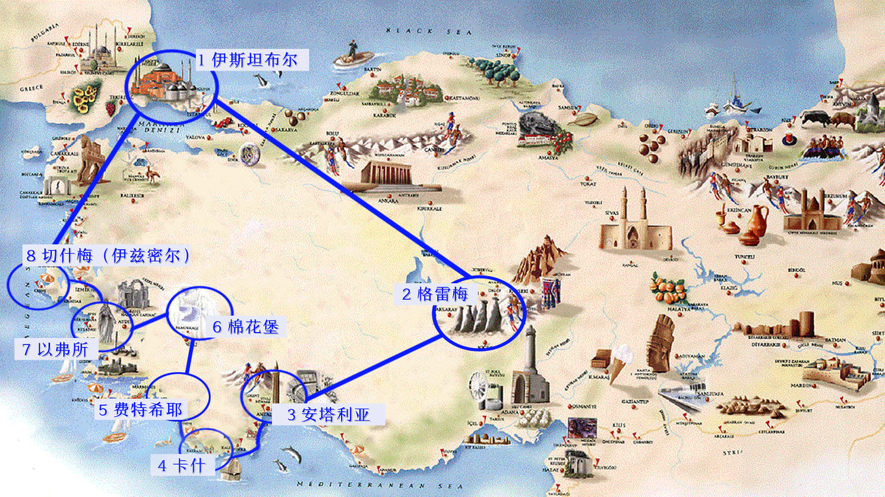
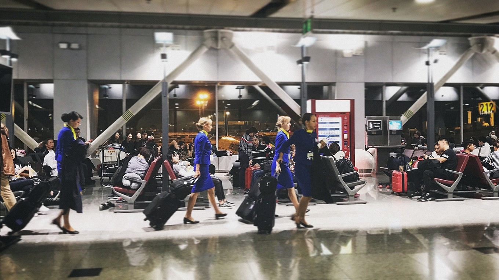
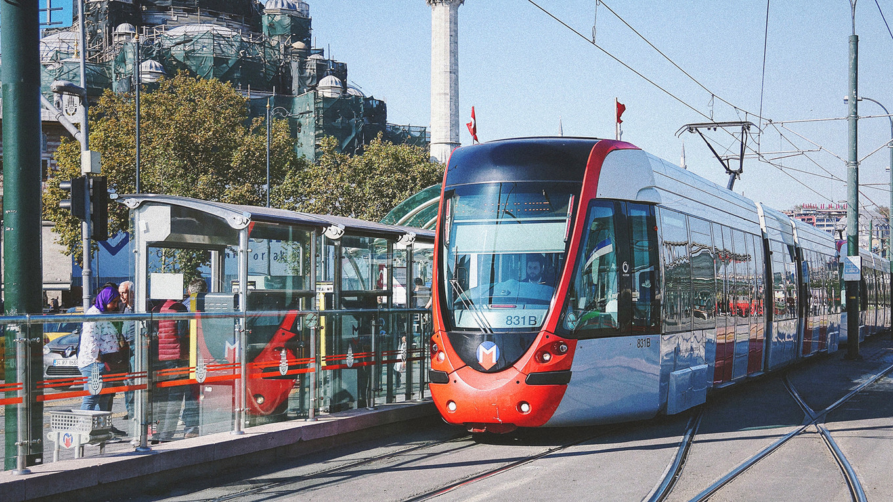
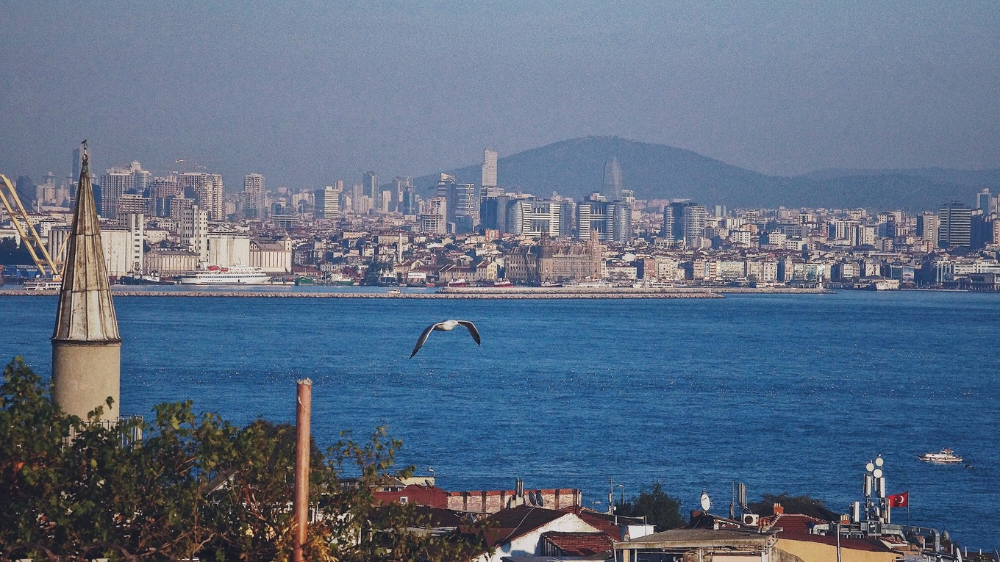
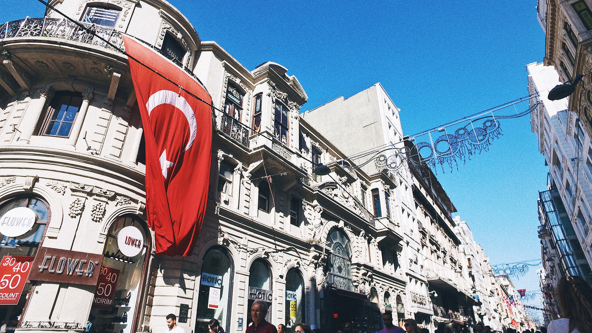
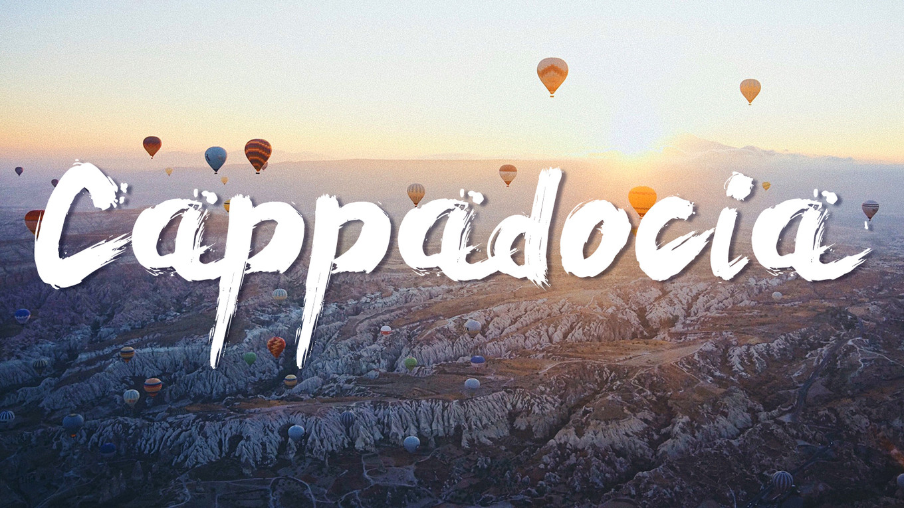

路线
我们的顺时针15日线路如下，其中，1~2，8~1为飞行模式，2~3为夜巴模式，3~8为自驾模式
伊斯坦布尔——世界的首都，你好
土国之旅的第一站，我们和大部分人一样，选在了 伊斯坦布尔 。
这座曾经是古代三大帝国首都的美丽城市，坐落在黑海和 地中海 之间，博斯普鲁斯海峡将它从 亚洲 与 欧洲 版块分裂开，东西方的文明交汇于此。
从机场取现金，乘地铁，再转乘轻轨。
到达酒店已经是当地时间的傍晚，我们低估了 伊斯坦布尔 的路况：各种狭窄的山坡路，完全不亚于 重庆 ！
外加两个人扛着各种行李及拍照设备，穿过一条条小巷，到达酒店时，仿佛是小长征的胜利。
这里的街 道真 的有点儿窄，动不动就来个单行道。除了随处可见大大小小的清真寺和星月旗，最有趣的当然是有轨电车——进站时，老远就能听见一阵阵清脆悦耳的“叮叮”声，伴着急促的摩擦轨道的噪声，疾速驶来。好像在说：喂！让开！老子要进站！
穿梭在亚欧之间的航海历险记
简单应付了几口早餐后，伴着微风和阳光，我们的旅途正式开始——第一站，博斯普鲁斯海峡！
土耳其 作家奥尔罕▪帕慕克曾这样描述： “假使这座城市诉说的是失败、毁灭、伤感和贫困，博斯普鲁斯则是歌咏生命和幸福， 伊斯坦布尔 的力量来自博斯普鲁斯。”由此可见，这条海峡对于土国人民的意义非凡。
乘坐游轮是穿梭欧亚的最佳方式，同时还能欣赏到两岸的无敌海景，顺道儿去 亚洲 区打个卡。我们按照导航指引来到Eminonu（我直接管它叫“埃米纳姆码头”）。
岸边一派生机景象： 烤玉米、烤面包圈的小推车，不时飘来一阵阵烘烤的香气，让马桶哥口水在嘴里打转； 加拉塔大桥（Galata Bridge）上整齐站成一排的垂钓大叔，暗中比拼着技艺； 热爱大海的少年们，在海边嬉戏玩耍； 自带2B属性的我，竟在桥头泛起了忧愁…
海风很猛烈，把我们吹得整个人从内由外的通透，这一刻感觉很舒（酸）爽，好像所有烦恼都被吹到九霄云外了。 虽然海面还算平稳，但我还是把自己幻想成在大海上航行的勇士了哈哈~
两岸的清真寺、皇宫、城市景象不断划过我们的视线，我和马桶（和船上所有游客）可以名正言顺地充当一回土鳖了：我们一会儿大惊小叫，一会儿啪啪一阵狂拍，一会儿欢呼雀跃。
独立大街暴走，悲催三连击
告别博斯普鲁斯海峡，向 新城 区出发。 新区没有老城区那般历史沉淀，著名的景点也少了些，但这里高楼林立，映衬了 土耳其 年轻和活力的一面。 时间有限，我们计划只打卡“独立大街”与“彩虹阶梯”。 哦没错~独立大街过去发生了一系列恐怖事件，使很多人坚信，到这去纯属是送命行为。对此，马桶哥是坚信不疑的，但我，却神经大条的忽略了这一点，只一心想去拔草心中惦念很久的“叮叮车”（复古轻轨）。
稍稍习惯了拥挤，我们开始细细品味这条仅3km的街道：各种琳琅满目的商店、餐厅、礼品店遍布街头，还有一些努力施展才华的卖艺青年，引得一阵阵围观。这大概是土国最繁华的一条街了吧！
卡帕多奇亚——圆梦热气球，见到最污的山
与 伊斯坦布尔 的人文、历史、建筑体验截然不同，接下来的目的地，我们将领略大自然的粗犷之美。 没错！就是那个被称作“地球上最像月球表面”的、最适合飞热气球的 卡帕多奇亚 ~ 想到即将要去坐热气球了，心早已飞了起来，对 伊斯坦布尔 的留恋也抛到了后脑勺~毕竟，乘着热气球来一场飞屋环游记，是多少女生的梦想！
这里插播解释一下“ 卡帕多奇亚 ”与“ 格雷梅 ”的关系—— 卡帕多西亚（Cappadocia）是历史上的一个区域名，这里拥有月球表面般的神奇地貌。而 格雷梅 ，是区域中一个童话般的小镇，这里因奇形怪状的洞穴屋而名声大噪，驴友们大多会选择在小镇留宿。
言归正传，说说我们在 卡帕多奇亚 的正经【行程】
D1 绿线一日游
D2 闲逛+落日ATV
D3 热气球+酒店打瞌睡